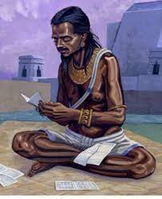

Brahmagupta, an ancient Indian mathematician and astronomer, made several significant discoveries and contributions in the field of mathematics. His most notable discovery is the formulation of rules for solving quadratic equations and the study of arithmetic and geometric progressions.
| Brahmagupta's Formula for Quadratic Equations | Brahmagupta provided a general formula for solving quadratic equations of the form ax^2 + bx = c. His formula, known as Brahmagupta's Formula or the Quadratic Formula, is used to find the roots of a quadratic equation. |
| Arithmetic Progressions | Brahmagupta extensively studied arithmetic progressions (sequences) and their properties, including formulas for finding the nth term, sum of terms, and sum of squares of terms. |
| Geometric Progressions | Brahmagupta made significant contributions to the study of geometric progressions (sequences), deriving formulas for finding the nth term, sum of terms, and sum of the geometric series. |
| The Zero and Negative Numbers | Brahmagupta provided rules and explanations for the use of zero and negative numbers in mathematical calculations, including methods for performing arithmetic operations with these numbers. |
| Geometry and Trigonometry | Brahmagupta made contributions to geometry, exploring shapes, their properties, and measurement methods. He also developed trigonometric formulas and tables for calculating trigonometric functions. |